Visualization with matplotlib & seaborn
Plot Types · Distribution Shapes · Correlation · EDA Workflow · Outliers · Missing Values · matplotlib · seaborn
Exploratory Data Analysis is the process of summarizing and visualizing a dataset to understand its structure, identify patterns, and detect anomalies — before building any model.
Key questions EDA answers:
Skipping EDA is the most common source of poor ML results — you end up modeling data you don't understand.
| Plot | Purpose | When to use |
|---|---|---|
| Histogram | Frequency distribution of one numeric variable | Shape, center, spread of a feature |
| KDE | Smoothed density estimate | Comparing group distributions on one axis |
| Box Plot | Median, quartiles, outliers | Compare distributions across groups |
| Violin | Density shape + quartiles | Reveals bimodality that box plots hide |
| Scatter | Relationship between two numeric variables | Direction, strength, linearity |
| Line | Trend over ordered sequence | Time series, training curves |
| Bar | Counts or averages per category | Categorical comparisons |
| Heatmap | Matrix of values as color intensity | Correlation matrix, confusion matrix |
| Pair Plot | All pairwise scatter + diagonal histograms | Quick overview of all feature relationships |
Visual reference for the most common plot types you'll use in EDA.
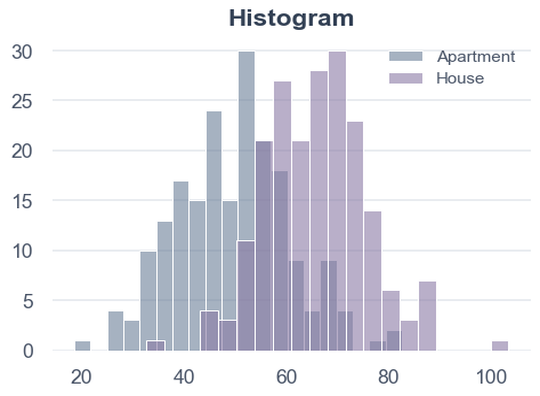
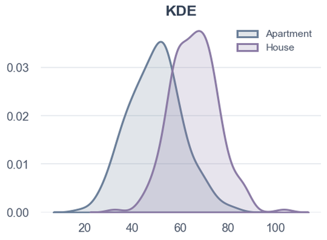
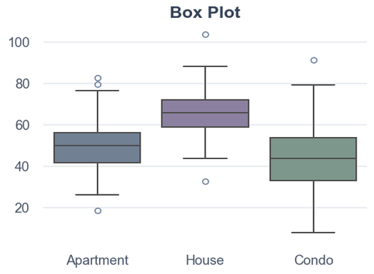
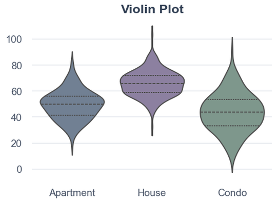
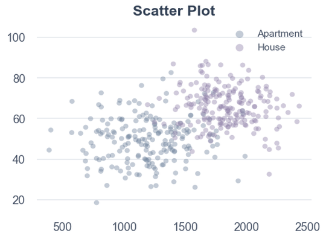
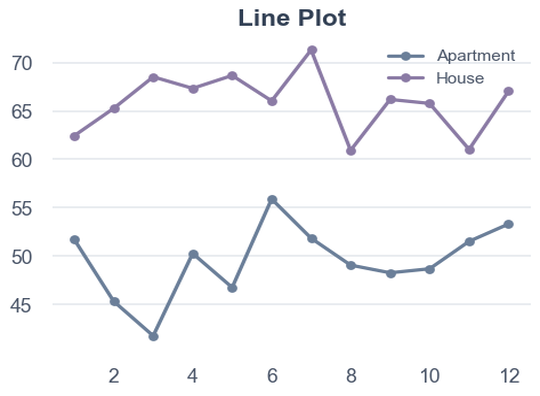
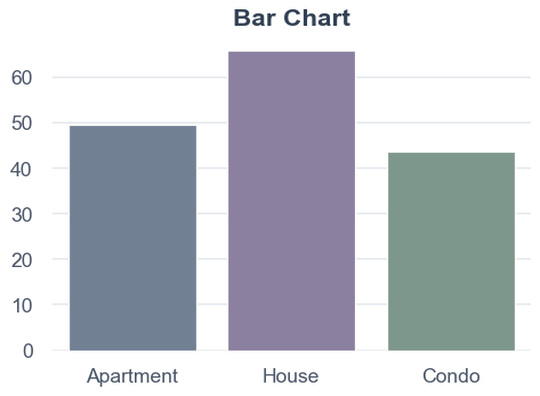
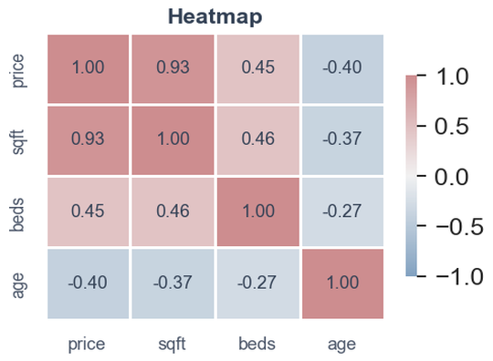
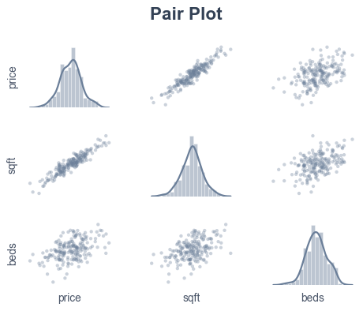
The shape of a histogram or KDE determines which transforms and models are appropriate.
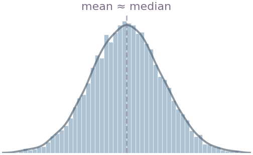
Symmetric (Normal)
Mean ≈ Median. Examples: heights, measurement errors.
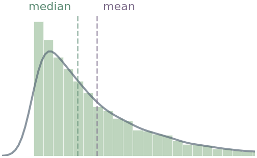
Right-skewed (Positive)
Mean > Median. Examples: income, house prices. Often fixed with log transform.
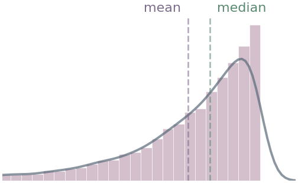
Left-skewed (Negative)
Mean < Median. Examples: age at retirement, scores on easy exam.
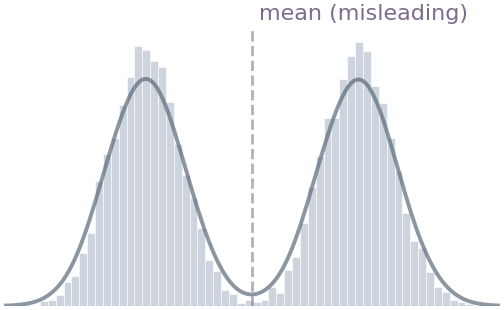
Bimodal
Two subpopulations mixed. Mean falls where little data exists. Consider splitting groups.
Box Plot — five-number summary + outlier detection
$$\text{Outlier if:}\; x < Q_1 - 1.5 \cdot \text{IQR} \;\;\text{or}\;\; x > Q_3 + 1.5 \cdot \text{IQR}$$
sns.boxplot(data=df, x='value', y='category', orient='h')Violin Plot — density shape + quartiles
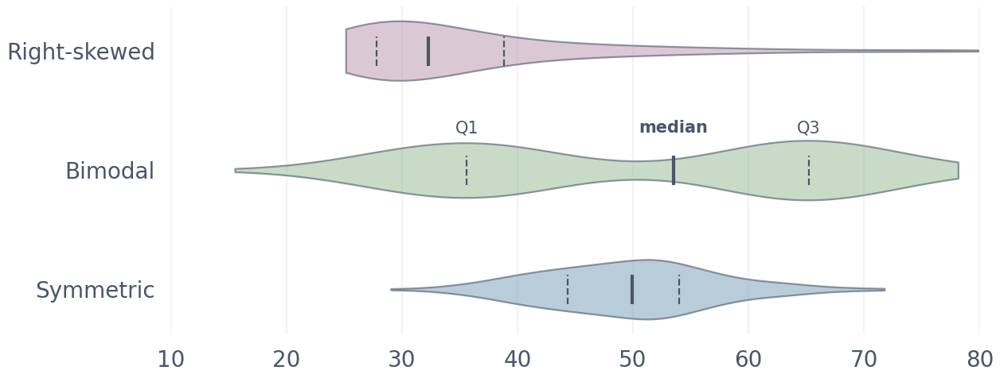
sns.violinplot(data=df, x='value', y='group', orient='h', inner='quartile')Shows the relationship between two numeric variables. Four things to look for:
| Property | What to look for | Implication |
|---|---|---|
| Direction | Points trend upward or downward | Positive or negative relationship |
| Strength | Points tightly clustered vs widely scattered | Strong vs weak relationship |
| Form | Linear (straight band) vs curved | Determines if linear model is appropriate |
| Outliers | Points far from the main cluster | Investigate — may distort regression line |
Use hue parameter to add a third dimension (color by group):
Start every EDA with numbers. df.describe() gives the first picture of each numeric column.
| Statistic | What to watch for |
|---|---|
| count | Different counts across columns → missing data |
| mean vs median | Large gap → skewed distribution |
| std | Large relative to mean → high variability |
| min / max | Unreasonable values → data errors (e.g., age = -5) |
| 25% / 75% | IQR — middle 50% spread |
$$\bar{x} = \frac{1}{n}\sum_{i=1}^{n} x_i \qquad s = \sqrt{\frac{1}{n-1}\sum_{i=1}^{n}(x_i - \bar{x})^2} \qquad \text{IQR} = Q_3 - Q_1$$
Measures linear association only.
$$r = \frac{\sum(x_i - \bar{x})(y_i - \bar{y})}{\sqrt{\sum(x_i - \bar{x})^2 \cdot \sum(y_i - \bar{y})^2}}$$
Assumes continuous data, roughly normal. Sensitive to outliers.
Measures monotonic association (consistently increasing/decreasing, even if curved).
Computed on ranks, not raw values. Robust to outliers. Works on ordinal data.
A log curve (always increasing) → Spearman ≈ 1, but Pearson < 1.
Pearson $r$ only captures linear relationships. Spearman $\rho$ captures monotonic ones. Both miss non-monotonic patterns. Each subplot shows computed $r$ and $\rho$ values.
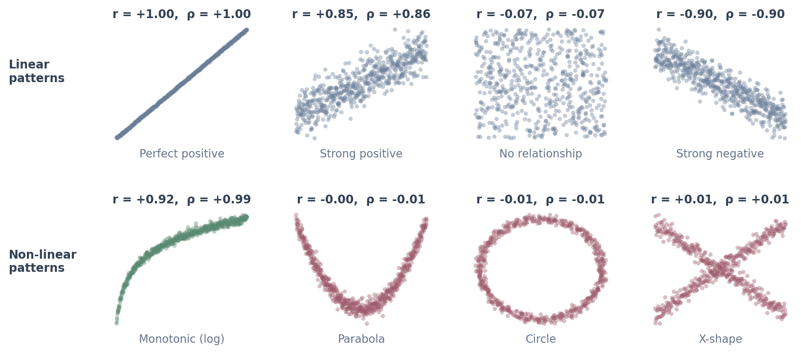
Row 1: Linear patterns — Pearson and Spearman agree.
Row 2: Non-linear patterns. Green = Spearman captures the monotonic curve that Pearson underestimates. Rose = non-monotonic — both measures fail. Always plot your data.
A structured approach — move from individual features to relationships to the full picture.
df.shape, df.info(), df.describe(), df.head()value_counts() for categoricals. Check distributions, outliers, balance.pairplot if ≤10 features. Identify multicollinearity.Outliers are observations that deviate significantly from the rest. They can be legitimate extremes or data errors.
$$\text{IQR} = Q_3 - Q_1 \qquad \text{Outlier if:}\; x < Q_1 - 1.5 \cdot \text{IQR} \;\;\text{or}\;\; x > Q_3 + 1.5 \cdot \text{IQR}$$
Understanding how much and why determines your strategy.
| Missing % | Strategy |
|---|---|
| < 5% | Drop rows — minimal impact |
| 5–30% | Impute: median (skewed), mean (normal), mode (categorical) |
| > 30% | Drop column or create binary missing indicator |
MCAR (Missing Completely at Random) — safe to impute. MNAR (Missing Not at Random, e.g., high earners skip income) — requires domain-specific handling.
When one class dominates, the model learns to ignore the minority class entirely because predicting the majority is the easiest way to minimize loss.
Example: fraud detection (95% Not Fraud, 5% Fraud)
| What happens | Why |
|---|---|
| Model predicts "Not Fraud" for everything | During training, the model sees 19 non-fraud examples for every 1 fraud. It learns that always predicting "Not Fraud" minimizes overall error. |
| 95% accuracy — looks great on paper | Accuracy counts all correct predictions equally. Getting the 9,500 non-fraud cases right overwhelms the 500 missed frauds. |
| 0% recall on fraud — useless in practice | The model never learned the fraud pattern. It has no ability to detect what you actually care about. |
| Decision boundary is biased toward majority | The loss gradient is dominated by the majority class. The model's decision boundary shifts to classify almost everything as the majority. |
How to detect and respond
train_test_split(stratify=y) preserves class ratios in both setsclass_weight='balanced' penalizes misclassifying the minority more heavily
matplotlib organizes every plot as Figure (canvas) + Axes (plot area). All customization happens through ax.
| Method | Purpose |
|---|---|
ax.plot(x, y) | Line plot |
ax.scatter(x, y) | Scatter plot |
ax.bar(x, h) | Bar chart |
ax.hist(data, bins) | Histogram |
ax.boxplot(data) | Box plot |
ax.set_*() | Title, labels, limits |
Call savefig() before show().
Combine multiple plots in a single figure for side-by-side comparison.
axes[row, col] accesses each subplot — standard ax objectplt.tight_layout() adjusts spacing to prevent label overlapplt.subplots(1, 3) → access with axes[0], axes[1], axes[2]
Built on matplotlib. Higher-level API, Pandas-native, better defaults. Every seaborn plot returns a matplotlib Axes.
| Function | Purpose |
|---|---|
sns.histplot(data, x, kde=True) | Histogram + optional density curve |
sns.kdeplot(data, x) | Smooth density — good for comparing groups |
sns.boxplot(data, x, y) | Box plots per group |
sns.violinplot(data, x, y) | Density shape + quartiles per group |
sns.scatterplot(data, x, y, hue) | Scatter with color by group |
sns.pairplot(data, hue) | All pairwise scatter + diagonal histograms |
sns.heatmap(matrix, annot=True) | Correlation matrix or confusion matrix |
sns.countplot(data, x) | Count per category — check class balance |
sns.barplot(data, x, y) | Mean per category with confidence intervals |